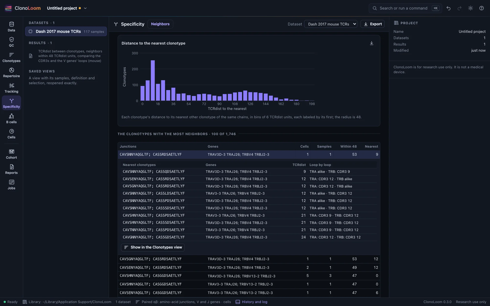
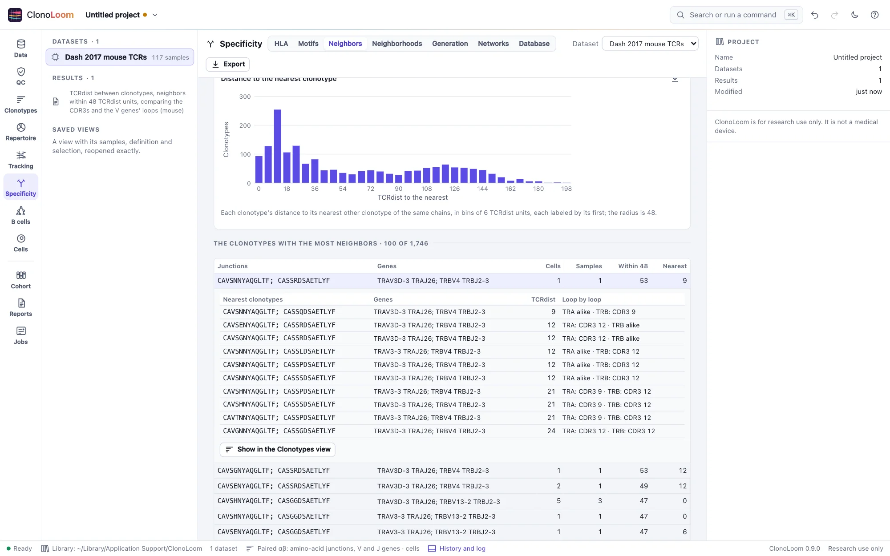

Similar receptors (TCRdist)
The Specificity view's Neighbors part compares each T-cell clonotype with every other of the same chains by TCRdist. Receptors this alike may recognize the same antigen; distance suggests a shared specificity, it does not show one.
Each clonotype against every other


Open T-cell receptors (single cells with their α and β chains, or bulk β chains), define clonotypes by amino-acid junction (Clonotypes), and open Specificity › Neighbors. Compare the receptors compares each clonotype with every other of the same chains, as a job, and keeps the result with the project:
- The distance to the nearest: each clonotype's nearest other clonotype, as a histogram. Receptors of one specificity sit closer to each other than to unrelated receptors: an epitope-sorted set has a peak of near neighbors that a donor's whole blood does not.
- The clonotypes with the most neighbors within the radius, and each one's nearest distance. Choose one to see its ten nearest, how far apart each loop is, and to show it in the Clonotypes view.
A clonotype is compared only with clonotypes of the same chains: under a paired definition, a cell's clonotype with both chains is compared with the others with both, one with a β chain alone with the others with a β chain alone. Clonotypes of B cells, without a junction, or with a V gene the loops' database lacks are counted, and left out.
The distance
TCRdist (Dash et al. 2017) compares a chain loop by loop: the CDR3, weighted 3, and the V gene's CDR1, CDR2 and CDR2.5 (the loop between CDR2 and CDR3 that faces the peptide and MHC), each weighted 1. Two residues differ by 4 less their BLOSUM62 score, at most 4 and 0 for the same residue. A pair of chains' distance is the sum of its chains'. ClonoLoom computes it as tcrdist3 does (Mayer-Blackwell et al. 2021), where tcrdist3 and the paper differ:
- the CDR3 leaves out its first three and last two residues; two CDR3s of different lengths are aligned at both ends, the longer one's extra residues left out where the residues compared differ least, each extra residue costing 12 (4, weighted 3);
- the V gene's loops are aligned strings, compared position by position, a gap against a residue costing nothing;
- distances are whole numbers.
Every distance between Dash et al.'s 1,924 mouse clones and 415 human clones (3.87 million pairs), α, β and paired, and each loop's alone, equals tcrdist3's.
The V genes' loops
Each V allele's CDR1, CDR2 and CDR2.5 come from tcrdist3's database of genes (1.2 MB; MIT; made from IMGT's germline genes, for human, mouse and rhesus macaque). ClonoLoom downloads it once, when you ask (Reference data), checks it against its recorded SHA-256, and names that checksum in every result. Until then, or with Compare the CDR3s alone, the CDR3s are compared alone, and the result says so.
- The organism whose loops are used is the one whose database names the most of the dataset's V genes, unless you choose it.
- A V gene called without its allele, as a definition by gene keeps it, takes its allele *01's loops; a tie of several genes, its first's. The result lists every call read so.
- A definition by V family, or without V, compares the CDR3s alone: a family has no loops of its own.
The radius
Two clonotypes are neighbors within the radius: 24 TCRdist units a chain by default (48 for a pair), as far as two CDR3 substitutions of the most different residues. Mayer-Blackwell et al. chose each epitope-specific receptor's radius from a background of unrelated receptors, between 10 and 36 for β chains; neighborhoods against such backgrounds come in a later release. On a healthy donor's 3,576 paired clonotypes (the OTS example), 1% had a neighbor within 48; on Dash et al.'s epitope-sorted mouse TCRs, 54%.
Using the result
The histogram saves as a figure. Export writes each compared clonotype's neighbors within the radius and its nearest, with their distance, as CSV. The methods paragraph says how the clonotypes were compared, naming the loops' database by its checksum. Scripts use find_neighbors (Remote control). A hundred thousand paired receptors are compared in about 25 seconds on ten processors.